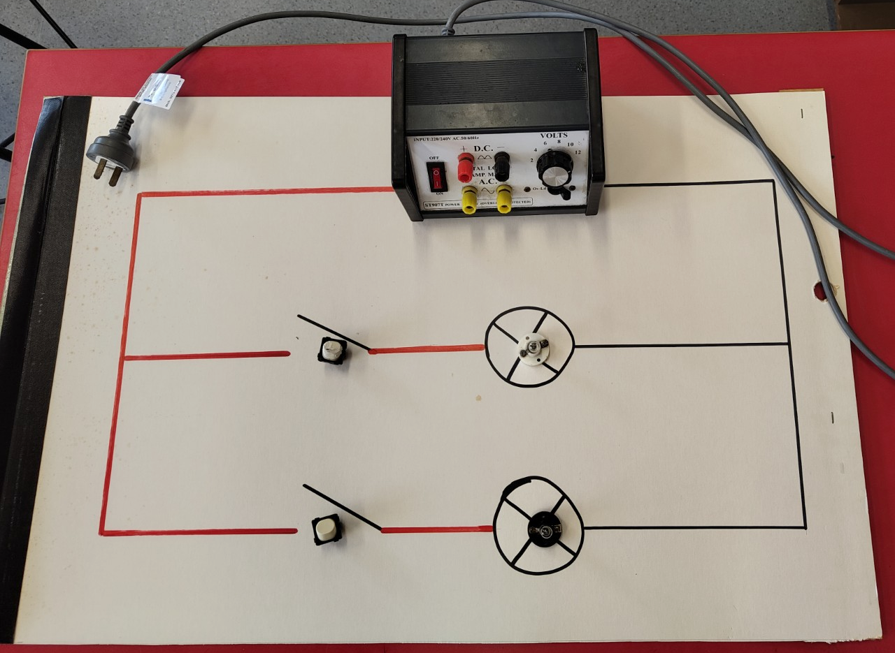
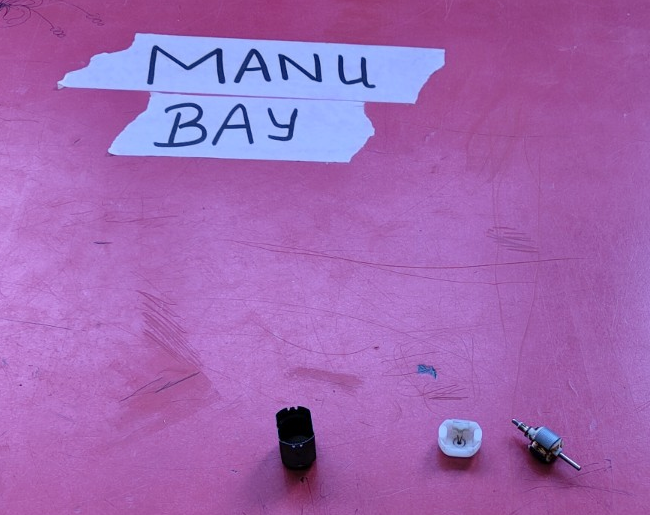
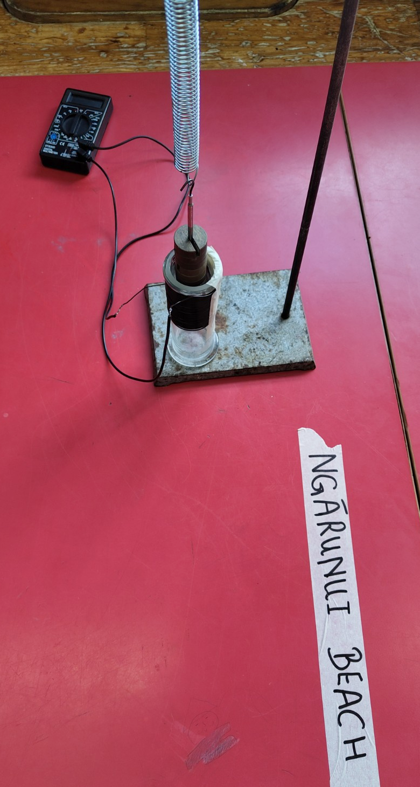
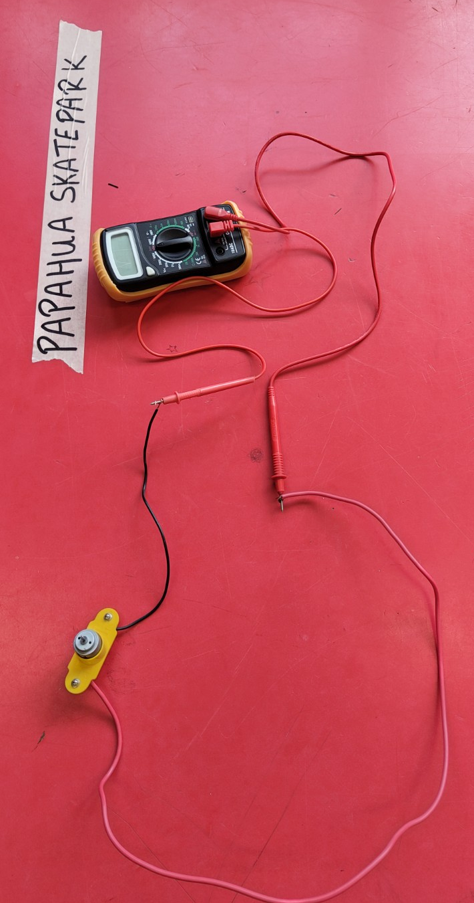

Year 10 Science 2 | 12 November 2026 | 55 minutes
Learning intention
Use practical evidence to explain either how two lamps can be switched independently or how movement can produce a voltage.
Success criteria
- Circuit pathway: build and test two lamps with one switch for each lamp. Generator pathway: record the meter readings at A and B.
- Use the opened motor to connect observations from the moving magnet and the hand-turned motor.
- Use one observation to explain part of how a wind turbine generates electricity.
Preparation
Set up and test two oscillating-magnet and coil stations with voltmeters, two DC motors connected to voltmeters, and one opened, unpowered motor. Mark each station A, B or D to match the worksheet. Secure the magnet and motor apparatus and check the meter response before class.
Arrange chairs in a semicircle. Prepare two-switch, two-lamp kits with circuit guide boards at separate benches. Check each kit and set out the existing switching worksheet and the generator worksheet.
Whakataukī: E koekoe te tūī, e ketekete te kākā, e kūkū te kererū. The tūī chatters, the kākā squawks, and the kererū coos. Read it aloud. Ask pairs why the saying gives each bird a different sound and what that might say about people. Hear two interpretations.
Teaching sequence
Teacher activity | Student activity |
Arrival and hook | 10 min Arrange seats in a semicircle. Play Tour a Wind Turbine with sound as students arrive. https://youtu.be/5vj6GwVhQT0 Lead the bird-call whakataukī and hear two responses. Run a five-minute hook: hold up a small motor, pause, and ask, “What if this could make electricity without a battery?” Ask pairs what they would look for on the meter. Connect their ideas to the turbine and invite them to test their predictions. | Watch the turbine tour. Discuss the whakataukī. Look at the motor, offer a prediction and say what you would look for on the meter. |
Practical pathways | 35 min Start the whole class with the two-lamp circuit challenge as a competition, using the kits and circuit guide boards. Allow about 10–15 minutes, with support as needed. Move pairs to the generator stations once they have tested both switches. Circulate between the benches, check circuits before testing, and ask two or three pairs at a time what they saw, what they think happened and why. Move circuit groups to the stations once they have tested both switches. | Build and test two lamps with one switch for each lamp using the guide board. Once both switches work independently, collect the generator worksheet and visit Ngārunui Beach, Papahua Skatepark and Manu Bay. At A, B and D, record what you see and step away to discuss. Answer the motor comparison after visiting all three stations. |
Apply observations | 5 min Offer early finishers the cardboard turbine blade challenge agreed with my mentor teacher. Provide cardboard and scissors. Check the blade mount and supervise testing at the teacher’s station. Ask students to change one feature and compare the results. | Use the station observations to explain how wind could turn the motor. If you finish the stations early, sketch and build cardboard turbine blades. Ask for a mount check before testing. Record whether the rotor turns and what the meter shows. Change one feature and compare. |
Plenary | 5 min Hear one pair from each pathway. Ask how they tested independent switching or what changed the meter reading. Connect the motor to the turbine video and collect one short individual response. | Share one finding from your pathway. Write one observation that shows the switches work independently or that movement produced a voltage. |
Reference setup photographs from 11 November 2026
The photographs document how the circuit bench and three generator stations were set up for Year 10 Science 1. They show the setup, not evidence of student learning.



